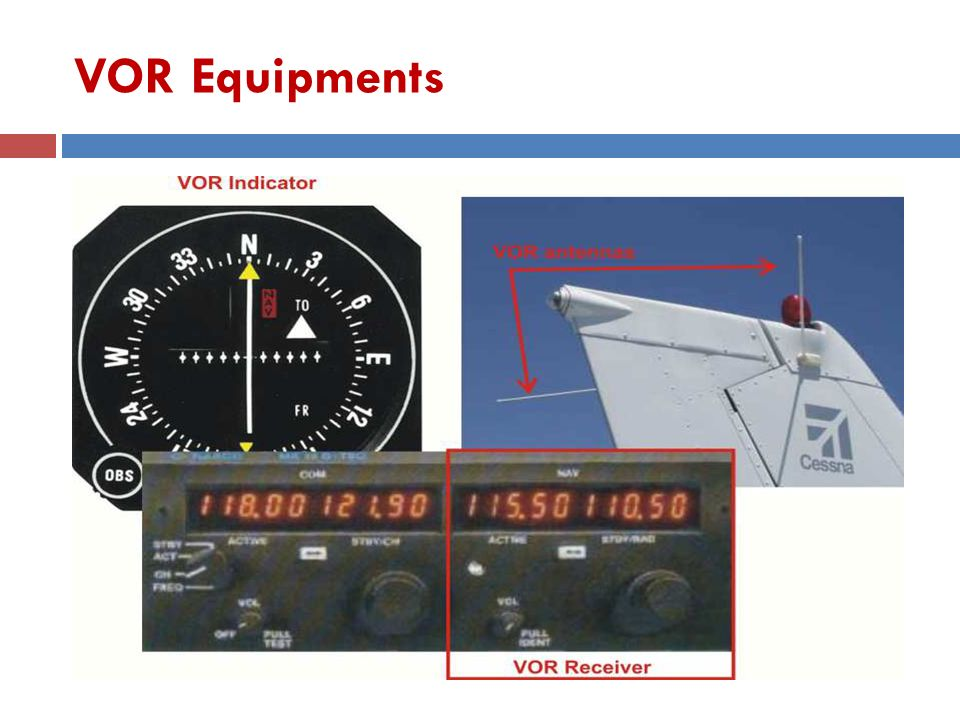

VOR
Objective
To teach:
- How to use VOR to find a position
- How to track IB/OB
- How to intercept IB/OB
- How to find a position using two VORs
Motivation
Why:
- Cross-country
- Licensing requirement PPL(no test) & CPL
Threshold Knowledge Test
Essential background Knowledge
Equipment on the ground:
- Transmitting station (transmits radial signals in all directions 360 degrees)
- Data box (show VTA): station name, morse code, and etc.
Equipment in the aircraft:

Procedures
Always do this step before using VOR:
Tune (frequency) – Identify (mores code) – Set (MC with HI & OBS)
From top to bottom
(From flag top radial is the radial you are on and To flag bottom radial is the radial you are on)
- How to find a position (VOR is not heading sensitive but position sensitive)
- T-I-S
- From flag -> CDI needle center -> Read top radial
- How to track OB
- T-I-S
- Find a position
- Fly the top
- Confirm (Top VOR -> HI -> MC -> From flag)
- How to track IB (Always fly to top VOR)
- T-I-S
- To flag -> CDI needle center
- Fly the top
- Confirm (Top VOR -> HI -> MC -> To flag)
- How to intercept OB (maximum deviation 10 degrees, 2 degrees per dot)
EX) Intercept & track OB on 060 radial at 90°
- T-I-S (HI/MC)
- OBS -> Radial to the Top (Ex 060)
- Turn parallel to the top (Ex 060)
- Check CDI: Right = turn right / Left = turn left
- Turn right to 060+090 = 150°
- CDI starts to move (needle alive) -> start turning to the top (Ex 060)
- Confirm
- How to intercept IB
EX) Intercept & track IB on 060 radial at 90°
- T-I-S (HI/MC)
- OBS -> Radial on the bottom (Ex 060)
- Turn parallel to the top (Ex 240)
- Check CDI: Right = turn right / Left = turn left
- Turn left 240-090 = 150°
- CDI starts to move (needle alive) -> start turning to the top (Ex 240)
- Confirm
- How to find a position (fix) using two VORs
- Find position twice using 2 VORs
Safety
- VOR check (Tune VOR on the ground to known VOR facility and the tolerance is 4 degrees)
- Ex) Victoria YYJ find a position 025 on top
- T-I-S is a must